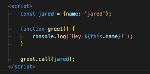
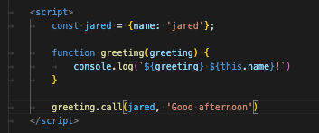

In a function, you can use this to call out values from an
object
Here is an example:
This would log in the console "Hey jared"
You can even do with if the function has a required arg. This would log Good afternoon Jared!
Memoization is a useful process that can make a function more efficient. It is basically te process of saving the argument in cache rather than going the the function again.
Internet is separated into clients and servers. An internet browser is a client and it requests from the server to display to the user. JS was designed for client side programming but with Ajax, can get things from the server. Usually in the form of JSON data.